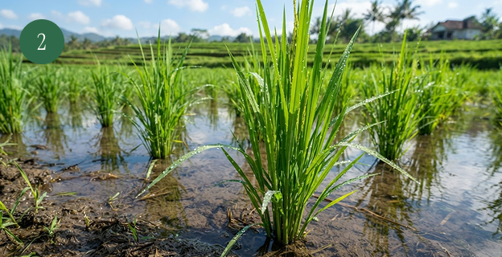
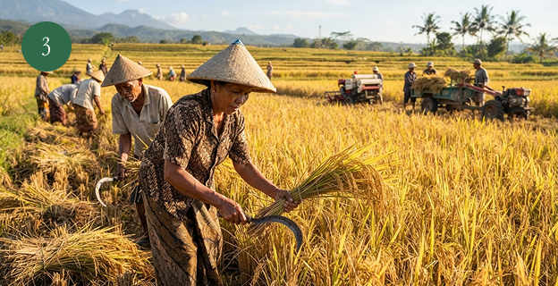
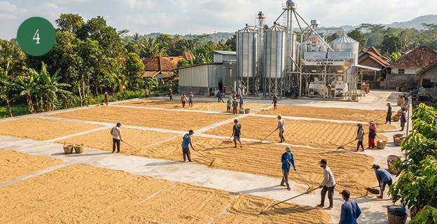
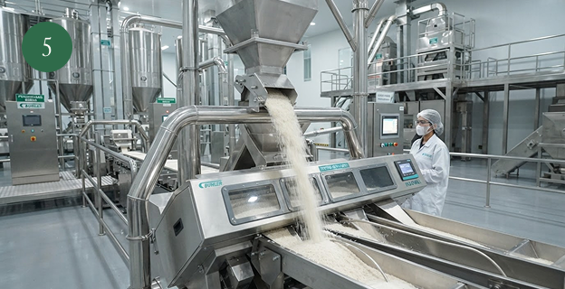
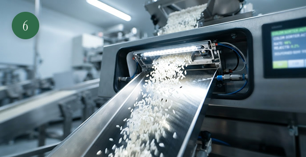
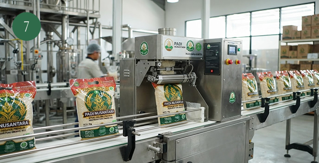
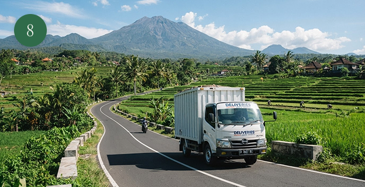
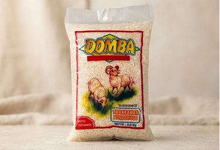

Proses Produksi Beras dari Awal hingga Akhir
Kombinasi kearifan budidaya organik regeneratif dengan teknologi penggilingan modern memastikan setiap butir Beras Domba higienis, pulen, dan bernutrisi tinggi.
8 Tahap Presisi Produksi Beras Domba
Setiap tahapan diawasi secara ketat oleh tim kontrol kualitas untuk menjaga konsistensi rasa dan kebersihan.

Penanaman Padi
Pemilihan benih padi lokal non-GMO bersertifikat ditanam pada jarak tanam ideal agar rumpun tumbuh sehat dan kuat.

Pemupukan Organik
Menggunakan pupuk kompos matang hasil fermentasi kotoran domba yang kaya unsur hara tanpa pupuk kimia sintetis.

Pemanenan Selektif
Pemanenan dilakukan saat bulir padi mencapai tingkat kematangan fisiologis optimal untuk menjaga aroma dan keutuhan butir.

Pengeringan Terkendali
Gabah dikeringkan secara merata hingga kadar air standar di bawah 14% agar beras tahan simpan alami dan tidak mudah patah.

Penggilingan Presisi
Proses pemecahan kulit dan penyosohan lembut menggunakan mesin modern higienis untuk mempertahankan lapisan nutrisi alami.

Penyortiran Kualitas
Penyortiran optik berteknologi tinggi memisahkan butir patah, menguning, atau benda asing dengan tingkat kemurnian hingga 99.8%.

Pengemasan Higienis
Dikemas dalam plastik food-grade tebal berlapis untuk melindungi beras dari kelembapan udara, kutu, dan kontaminasi.

Distribusi Terpercaya
Pengiriman terjadwal langsung dari pabrik pusat ke mitra distribusi dan rumah pelanggan dalam kondisi prima.
Standar Pengemasan Pabrik
Fasilitas pengemasan kami menerapkan standar sanitasi pangan ketat sehingga beras tetap higienis sejak keluar dari mesin hingga tiba di dapur Anda.
- ✅ Kemasan Food-Grade Berlapis: Melindungi aroma alami pandan dan mencegah kontaminasi udara lembap.
- ✅ Teknologi Kedap Udara & Anti-Kutu Alami: Tanpa fumigasi kimia berbahaya, aman disimpan hingga 6 bulan.
- ✅ Kode Batch & Tanggal Panen Jelas: Memudahkan pelacakan sumber lahan petani di setiap kemasan.

Hadirkan Beras Berkualitas untuk Keluarga Anda Setiap Hari
Pilih ukuran kemasan sesuai kebutuhan rumah tangga maupun usaha kuliner Anda dengan jaminan kualitas terbaik.